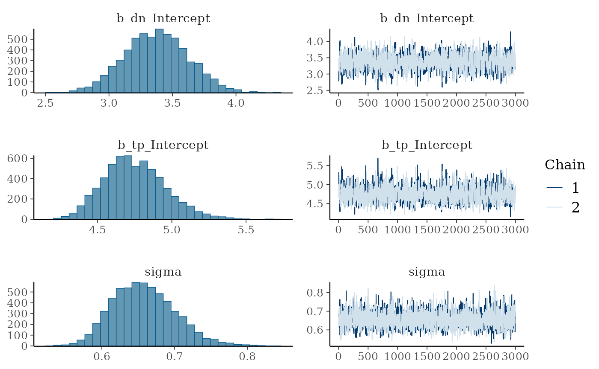
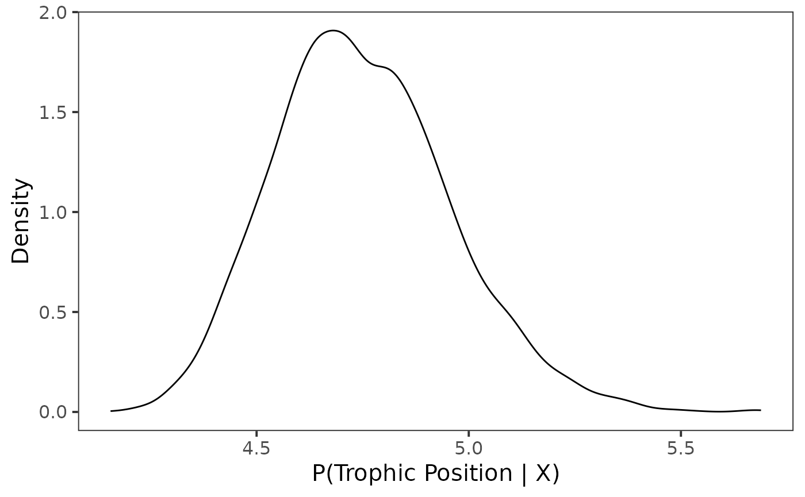
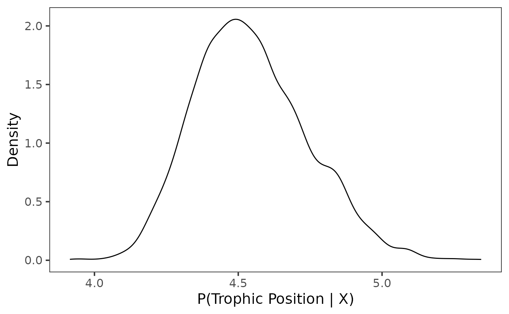
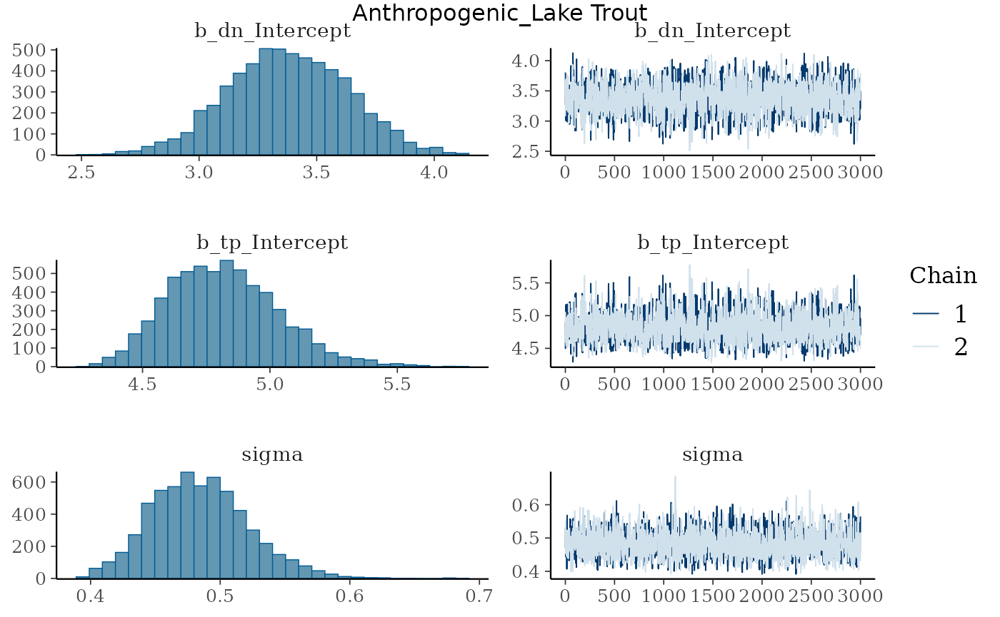
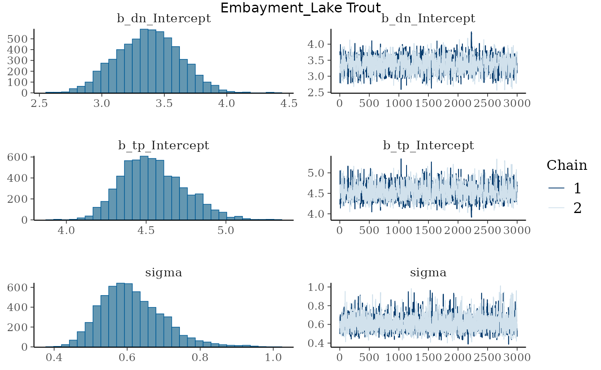
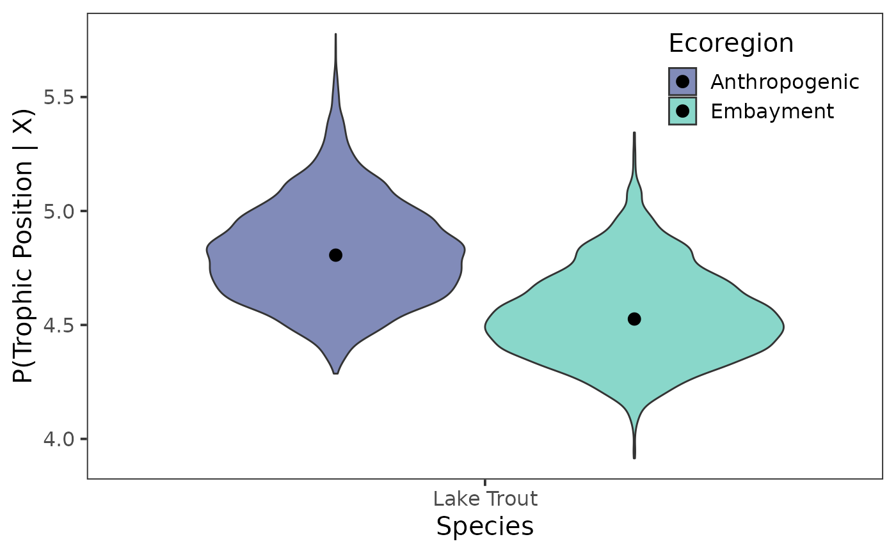
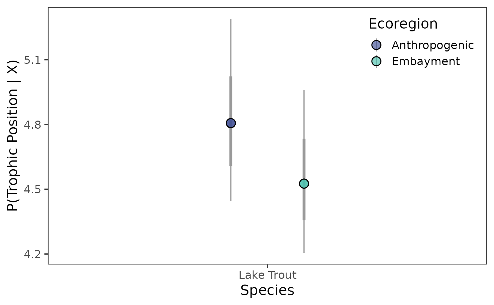

Estimate trophic position - one source model
Source:vignettes/Estimate_trophic_position_one_source_model.Rmd
Estimate_trophic_position_one_source_model.RmdOur Objectives
The purpose of this vignette is to learn how to estimate trophic position of a species using stable isotope data ( and ). We can estimate trophic position using a one source model based on equations from Post 2002.
Trophic Position Model
The equation for a one source model consists of the following:
Where
is the trophic position of the baseline (e.g., 2),
is the
of the consumer,
is the mean
of the baseline, and
is the trophic enrichment factor (e.g., 3.4).
To use this model with a Bayesian framework, we need to rearrange this equation to the following:
The function one_source_model() uses this rearranged
equation.
Vignette structure
First we will need to organize the data prior to running the model. To do this work we will use {dplyr} and {tidyr} but we could also use {data.table}.
When running the model we will use {trps} and {brms} and iterative processes provided by {purrr}.
Once we have run the model we will use {bayesplot} to assess models and then extract posterior draws using {tidybayes}. Posterior distributions will be plotted using {ggplot2} and {ggdist} with colours provided by {viridis}.
Assess data
In {trps} we have several data sets, they include stable isotope data ( and ) for a consumer, lake trout (Salvelinus namaycush), a benthic baseline, amphipods, and a pelagic baseline, dreissenids, for an ecoregion in Lake Ontario.
Consumer data
We will check out each data set with the first being the consumer.
consumer_iso
#> # A tibble: 30 × 4
#> common_name ecoregion d13c d15n
#> <fct> <fct> <dbl> <dbl>
#> 1 Lake Trout Embayment -22.9 15.9
#> 2 Lake Trout Embayment -22.5 16.2
#> 3 Lake Trout Embayment -22.8 17.0
#> 4 Lake Trout Embayment -22.3 16.6
#> 5 Lake Trout Embayment -22.5 16.6
#> 6 Lake Trout Embayment -22.3 16.6
#> 7 Lake Trout Embayment -22.3 16.6
#> 8 Lake Trout Embayment -22.5 16.2
#> 9 Lake Trout Embayment -22.9 16.4
#> 10 Lake Trout Embayment -22.3 16.3
#> # ℹ 20 more rowsWe can see that this data set contains the common_name
of the consumer , the ecoregion samples were collected
from, and
(d13c) and
(d15n).
Baseline data
Next for this vignette we will only assess and use the benthic baseline data set.
baseline_1_iso
#> # A tibble: 14 × 5
#> common_name ecoregion d13c_b1 d15n_b1 id
#> <fct> <fct> <dbl> <dbl> <int>
#> 1 Amphipoda Embayment -26.2 8.44 1
#> 2 Amphipoda Embayment -26.6 8.77 2
#> 3 Amphipoda Embayment -26.0 8.05 3
#> 4 Amphipoda Embayment -22.1 13.6 4
#> 5 Amphipoda Embayment -24.3 6.99 5
#> 6 Amphipoda Embayment -22.1 7.95 6
#> 7 Amphipoda Embayment -24.7 7.37 7
#> 8 Amphipoda Embayment -26.6 6.93 8
#> 9 Amphipoda Embayment -24.6 6.97 9
#> 10 Amphipoda Embayment -22.1 7.95 10
#> 11 Amphipoda Embayment -24.7 7.37 11
#> 12 Amphipoda Embayment -22.1 7.95 12
#> 13 Amphipoda Embayment -24.7 7.37 13
#> 14 Amphipoda Embayment -26.9 10.2 14We can see that this data set contains the common_name
of the baseline, the ecoregion samples were collected from,
and
(d13c_b1) and
(d15n_b1).
Organizing data
Now that we understand the data we need to combine both data sets to estimate trophic position for our consumer.
To do this we first need to make an id column in each
data set that will assist in joining them together. We will first
arrange() the data by ecoregion and
common_name. Next we will group_by() the same
variables, and add id for each grouping using
row_number(). Always ungroup() the
data.frame after using group_by(). Lastly, we
will use dplyr::select() to rearrange the order of the
columns.
Baseline data
Next let’s add id to baseline_1_iso data
frame. For joining purposes we are going to drop
common_name from this data frame.
Joining isotope data
Now that we have the consumer and baseline data sets in a consistent
format we can join them by "id" and
"ecoregion" using left_join() from {dplyr}.
We can see that we have successfully combined our consumer and
baseline data. We need to do one last thing prior to analyzing the data
and that is calculate the mean
(c1) and
(n1) for the baseline and add in the constant
(l1) to our data frame. We will do this by
groub_by() our two groups, then using mutate()
and mean() to calculate the mean values.
Important note, to run the model successfully columns need to be
named d15n, n1, and l1.
combined_iso_os <- combined_iso_os %>%
group_by(ecoregion, common_name) %>%
mutate(
c1 = mean(d13c_b1, na.rm = TRUE),
n1 = mean(d15n_b1, na.rm = TRUE),
l1 = 2
) %>%
ungroup()
combined_iso_os
#> # A tibble: 30 × 10
#> id common_name ecoregion d13c d15n d13c_b1 d15n_b1 c1 n1 l1
#> <int> <fct> <fct> <dbl> <dbl> <dbl> <dbl> <dbl> <dbl> <dbl>
#> 1 1 Lake Trout Embayment -22.9 15.9 -26.2 8.44 -24.6 8.28 2
#> 2 2 Lake Trout Embayment -22.5 16.2 -26.6 8.77 -24.6 8.28 2
#> 3 3 Lake Trout Embayment -22.8 17.0 -26.0 8.05 -24.6 8.28 2
#> 4 4 Lake Trout Embayment -22.3 16.6 -22.1 13.6 -24.6 8.28 2
#> 5 5 Lake Trout Embayment -22.5 16.6 -24.3 6.99 -24.6 8.28 2
#> 6 6 Lake Trout Embayment -22.3 16.6 -22.1 7.95 -24.6 8.28 2
#> 7 7 Lake Trout Embayment -22.3 16.6 -24.7 7.37 -24.6 8.28 2
#> 8 8 Lake Trout Embayment -22.5 16.2 -26.6 6.93 -24.6 8.28 2
#> 9 9 Lake Trout Embayment -22.9 16.4 -24.6 6.97 -24.6 8.28 2
#> 10 10 Lake Trout Embayment -22.3 16.3 -22.1 7.95 -24.6 8.28 2
#> # ℹ 20 more rowsand it is now ready to be analyzed!
Bayesian Analysis
We can now estimate trophic position for lake trout in an ecoregion of Lake Ontario.
There are a few things to know about running a Bayesian analysis, I suggest reading these resources:
- Basics of Bayesian Statistics - Book
- General Introduction to brms
- Estimating non-linear models with brms
- Andrew Proctor’s - Module 6
- van de Schoot et al., 2021
Priors
Bayesian analyses rely on supplying uninformed or informed prior
distributions for each parameter (coefficient; predictor) in the model.
The default informed priors for a one source model are the following,
assumes a normal distribution (dn;
;
),
trophic position assumes a uniform distribution (lower bound = 2 and
upper bound = 10),
assumes a uniform distribution (lower bound = 0 and upper bound = 10)
and if informed priors are desired for
(n1;
;
),
we can set the argument bp to TRUE in all
one_source_ functions.
You can change these default priors using
one_source_priors_params(), however, I would suggest
becoming familiar with Bayesian analyses, your study species, and system
prior to adjusting these values.
Model convergence
Some important things to pay attention to are always run at least 2 chains, if the model does not converge you can try to increase the following:
The amount of samples that are burned-in (discarded; in
brm()this can be controlled by the argumentwarmup)The number of iterative samples retained (in
brm()this can be controlled by the argumentiter).The number of samples drawn (in
brm()this is controlled by the argumentthin).Adjust the
adapt_deltavalue usingcontrol = list(adapt_delta = 0.95).
When assessing the model we want R-hat to be 1 or within 0.05 of 1, which indicates that the variance among and within chains is equal (See {rstan} docmentation on R-hat), a high value for effective sample size (ESS), trace plots to look “grassy” or “caterpillar like”, and posterior distributions to look relatively normal.
Estimating trophic position
We will use functions from {trps} that drop into a
{brms} model. These
functions are one_source_model() which provides
brm() the formula structure needed to run a one source
model. Next brm() needs the structure of the priors which
is supplied to the prior argument using
one_source_priors(). Lastly, values for these priors are
supplied through the stanvars argument using
one_source_priors_params(). You can adjust the mean
(),
variance
(),
or upper and lower bounds (lb and ub) for each
prior of the model using one_source_priors_params(),
however, only adjust priors if you have a good grasp of Bayesian
frameworks and your study system and species.
Model
Let’s run the model!
m <- brm(
formula = one_source_model(),
prior = one_source_priors(),
stanvars = one_source_priors_params(),
data = combined_iso_os,
family = gaussian(),
chains = 2,
iter = 4000,
warmup = 1000,
cores = 4,
seed = 4,
control = list(adapt_delta = 0.95)
)
#> Compiling Stan program...
#> Start samplingModel output
Let’s view the summary of the model.
m
#> Family: gaussian
#> Links: mu = identity; sigma = identity
#> Formula: d15n ~ n1 + dn * (tp - l1)
#> dn ~ 1
#> tp ~ 1
#> Data: combined_iso_os (Number of observations: 30)
#> Draws: 2 chains, each with iter = 4000; warmup = 1000; thin = 1;
#> total post-warmup draws = 6000
#>
#> Regression Coefficients:
#> Estimate Est.Error l-95% CI u-95% CI Rhat Bulk_ESS Tail_ESS
#> dn_Intercept 3.37 0.25 2.89 3.86 1.00 1506 1878
#> tp_Intercept 4.54 0.20 4.21 4.96 1.00 1531 1891
#>
#> Further Distributional Parameters:
#> Estimate Est.Error l-95% CI u-95% CI Rhat Bulk_ESS Tail_ESS
#> sigma 0.61 0.09 0.47 0.81 1.00 2145 1903
#>
#> Draws were sampled using sampling(NUTS). For each parameter, Bulk_ESS
#> and Tail_ESS are effective sample size measures, and Rhat is the potential
#> scale reduction factor on split chains (at convergence, Rhat = 1).We can see that the R-hat is 1 meaning that variance among and within chains is equal (See {rstan} docmentation on R-hat) and that ESS is quite large. Overall, this means the model is converging and fitting accordingly.
Trace plots
Let’s view trace plots and posterior distributions for the model.
plot(m)
We can see that the trace plots look “grassy” meaning the model is converging!
Posterior draws
Let’s again look at the summary output from the model.
m
#> Family: gaussian
#> Links: mu = identity; sigma = identity
#> Formula: d15n ~ n1 + dn * (tp - l1)
#> dn ~ 1
#> tp ~ 1
#> Data: combined_iso_os (Number of observations: 30)
#> Draws: 2 chains, each with iter = 4000; warmup = 1000; thin = 1;
#> total post-warmup draws = 6000
#>
#> Regression Coefficients:
#> Estimate Est.Error l-95% CI u-95% CI Rhat Bulk_ESS Tail_ESS
#> dn_Intercept 3.37 0.25 2.89 3.86 1.00 1506 1878
#> tp_Intercept 4.54 0.20 4.21 4.96 1.00 1531 1891
#>
#> Further Distributional Parameters:
#> Estimate Est.Error l-95% CI u-95% CI Rhat Bulk_ESS Tail_ESS
#> sigma 0.61 0.09 0.47 0.81 1.00 2145 1903
#>
#> Draws were sampled using sampling(NUTS). For each parameter, Bulk_ESS
#> and Tail_ESS are effective sample size measures, and Rhat is the potential
#> scale reduction factor on split chains (at convergence, Rhat = 1).We can see that
is estimated to be 3.37 with l-95% CI of
2.89, and u-95% CI of 3.86. If we
move down to trophic position (tp) we see trophic position
is estimated to be 4.54 with l-95% CI of
4.21, and u-95% CI of 4.96.
Extract posterior draws
We will use functions from {tidybayes} to do this
work. First we will look at the the names of the variables we want to
extract using get_variables().
get_variables(m)
#> [1] "b_dn_Intercept" "b_tp_Intercept" "sigma" "lprior"
#> [5] "lp__" "accept_stat__" "stepsize__" "treedepth__"
#> [9] "n_leapfrog__" "divergent__" "energy__"You will notice that "b_tp_Intercept" is the name of the
variable
that we are wanting to extract. We then will extract posterior draws
using gather_draws(). We going to rename
"b_tp_Intercept" to tp.
post_draws <- m %>%
gather_draws(b_tp_Intercept) %>%
mutate(
ecoregion = "Embayment",
common_name = "Lake Trout",
.variable = "tp"
) %>%
dplyr::select(common_name, ecoregion, .chain:.value)Let’s view the post_draws
post_draws
#> # A tibble: 6,000 × 7
#> # Groups: .variable [1]
#> common_name ecoregion .chain .iteration .draw .variable .value
#> <chr> <chr> <int> <int> <int> <chr> <dbl>
#> 1 Lake Trout Embayment 1 1 1 tp 4.23
#> 2 Lake Trout Embayment 1 2 2 tp 4.26
#> 3 Lake Trout Embayment 1 3 3 tp 4.39
#> 4 Lake Trout Embayment 1 4 4 tp 4.44
#> 5 Lake Trout Embayment 1 5 5 tp 4.33
#> 6 Lake Trout Embayment 1 6 6 tp 4.74
#> 7 Lake Trout Embayment 1 7 7 tp 5.06
#> 8 Lake Trout Embayment 1 8 8 tp 4.40
#> 9 Lake Trout Embayment 1 9 9 tp 4.42
#> 10 Lake Trout Embayment 1 10 10 tp 4.30
#> # ℹ 5,990 more rowsWe can see that this consists of seven variables:
ecoregioncommon_name.chain-
.iteration(number sampled after burn-in) -
.draw(number sampled fromiter; adjusted usingthin) -
.variable(this will have different variables depending on what is supplied togather_draws()) -
.value(estimated value)
Extracting credible intervals
Considering we are likely using this information for a paper or
presentation, it is nice to be able to report the median and credible
intervals (e.g., equal-tailed intervals; ETI). We can extract and export
these values using spread_draws() and
median_qi from {tidybayes}.
I have renamed b_tp_Intercept to tp, added
the grouping columns, rounded all columns that are numeric to two
decimal points using mutate_if() and rearranged the order
of the columns using dplyr::select().
medians_ci <- m %>%
spread_draws(b_tp_Intercept) %>%
median_qi() %>%
rename(
tp = b_tp_Intercept
) %>%
mutate(
ecoregion = "Embayment",
common_name = "Lake Trout"
) %>%
mutate_if(is.numeric, round, digits = 2) %>%
dplyr::select(ecoregion, common_name, tp:.interval)Let’s view the output.
medians_ci
#> # A tibble: 1 × 8
#> ecoregion common_name tp .lower .upper .width .point .interval
#> <chr> <chr> <dbl> <dbl> <dbl> <dbl> <chr> <chr>
#> 1 Embayment Lake Trout 4.53 4.21 4.96 0.95 median qiI like to use {openxlsx} to export these values into a table that I can use for presentations and papers. For the vignette I am not going to demonstrate how to do this but please check out openxlsx.
Ploting posterior distributions
Now that we have our posterior draws extracted we can plot them. For comparing trophic position among species or groups, I like using either violin plots, interval points, or slab plots for posteriors. We can access violins through {ggplot2} with the later being available in {ggdist}.
Density plot
For this example we first are going to plot the density for posterior
draws using geom_density().
ggplot(data = post_draws, aes(x = .value)) +
geom_density() +
theme_bw(base_size = 15) +
theme(
panel.grid = element_blank()
) +
labs(
x = "P(Trophic Position | X)",
y = "Density"
)
Point interval
Next as a point interval plot using
stat_pointinterval().
ggplot(data = post_draws, aes(y = .value,
x = common_name)) +
stat_pointinterval() +
theme_bw(base_size = 15) +
theme(
panel.grid = element_blank()
) +
labs(
x = "P(Trophic Position | X)",
y = "Density"
)
Congratulations we have estimate trophic position for Lake Trout!
I’ll demonstrate below how to run the model with an iterative process to produce estimates of trophic position for more than one group (e.g., comparing trophic position among species or in this case different ecoergion).
Working with multiple groups
In {trps} we have
a data set that has consumer and baseline data already joined for two
ecoregions (combined_iso) using the same methods above.
Let’s look at this data frame.
Organize data - multiple groups
combined_iso
#> # A tibble: 117 × 13
#> id common_name ecoregion d13c d15n d13c_b1 d15n_b1 d13c_b2 d15n_b2 c1
#> <int> <fct> <fct> <dbl> <dbl> <dbl> <dbl> <dbl> <dbl> <dbl>
#> 1 1 Lake Trout Anthropo… -22.3 17.6 -20.3 8.85 -26.4 7.72 -21.3
#> 2 2 Lake Trout Anthropo… -23.0 17.7 -20.1 8.77 -24.4 8.69 -21.3
#> 3 3 Lake Trout Anthropo… -21.2 16.7 -20.3 8.85 -24.8 7.99 -21.3
#> 4 4 Lake Trout Anthropo… -20.9 18.7 -20.1 8.77 -24.4 8.69 -21.3
#> 5 5 Lake Trout Anthropo… -20.7 18.0 -20.5 8.38 -24.8 7.99 -21.3
#> 6 6 Lake Trout Anthropo… -20.7 18.0 -20.1 8.34 -24.4 8.05 -21.3
#> 7 7 Lake Trout Anthropo… -22.8 17.8 -19.7 8.04 -24.1 8.79 -21.3
#> 8 8 Lake Trout Anthropo… -22.4 17.9 -20.1 8.56 -24.6 10.7 -21.3
#> 9 9 Lake Trout Anthropo… -20.9 18.4 -18.7 8.95 -24.3 10.6 -21.3
#> 10 10 Lake Trout Anthropo… -21.7 17.7 -20.8 9.28 -24.6 10.7 -21.3
#> # ℹ 107 more rows
#> # ℹ 3 more variables: n1 <dbl>, c2 <dbl>, n2 <dbl>We can see that this data frame has isotope data for a second
baseline (dreissenids; d13c_b2 and d15n_b2) as
well as the mean values for both baselines
(c1-n2). These columns for the second baseline
are useful when estimating trophic position using a two source model but
we do not need them for this analysis and they can be removed.
We can also confirm that this data set has one species, lake trout.
unique(combined_iso$common_name)
#> [1] Lake Trout
#> Levels: Lake Troutcollected from two ecoregions in Lake Ontario.
unique(combined_iso$ecoregion)
#> [1] Anthropogenic Embayment
#> Levels: Anthropogenic EmbaymentLet’s remove the columns we don’t need, d13c_b2,
d15n_b2, c2, n2. We also need to
add
to the data frame (l1). We are going to make a
name column that will be the two groups we have
common_name and ecoregion pasted together. We
are doing this to make the iterative processes easier.
combined_iso_update <- combined_iso %>%
dplyr::select(-c(d13c_b2, d15n_b2, c2, n2)) %>%
mutate(
l1 = 2,
name = paste(ecoregion, common_name, sep = "_")
) %>%
dplyr::select(id, common_name, ecoregion, name, d13c:l1)
combined_iso_update
#> # A tibble: 117 × 11
#> id common_name ecoregion name d13c d15n d13c_b1 d15n_b1 c1 n1
#> <int> <fct> <fct> <chr> <dbl> <dbl> <dbl> <dbl> <dbl> <dbl>
#> 1 1 Lake Trout Anthropogenic Anth… -22.3 17.6 -20.3 8.85 -21.3 8.14
#> 2 2 Lake Trout Anthropogenic Anth… -23.0 17.7 -20.1 8.77 -21.3 8.14
#> 3 3 Lake Trout Anthropogenic Anth… -21.2 16.7 -20.3 8.85 -21.3 8.14
#> 4 4 Lake Trout Anthropogenic Anth… -20.9 18.7 -20.1 8.77 -21.3 8.14
#> 5 5 Lake Trout Anthropogenic Anth… -20.7 18.0 -20.5 8.38 -21.3 8.14
#> 6 6 Lake Trout Anthropogenic Anth… -20.7 18.0 -20.1 8.34 -21.3 8.14
#> 7 7 Lake Trout Anthropogenic Anth… -22.8 17.8 -19.7 8.04 -21.3 8.14
#> 8 8 Lake Trout Anthropogenic Anth… -22.4 17.9 -20.1 8.56 -21.3 8.14
#> 9 9 Lake Trout Anthropogenic Anth… -20.9 18.4 -18.7 8.95 -21.3 8.14
#> 10 10 Lake Trout Anthropogenic Anth… -21.7 17.7 -20.8 9.28 -21.3 8.14
#> # ℹ 107 more rows
#> # ℹ 1 more variable: l1 <dbl>This example data is now ready to be analyzed.
Estimate trophic position - multiple groups
We will use similar structure as before to model trophic position,
however, we will first split() the data into a list for all
groups and then use map() from {purrr} to run the model for
each group.
You will notice that the brm() call is exactly the same
as when we ran the model for one group. The only difference here is when
using map(), the data argument in
brm() needs to be replaced with .x to tell
brm() where to get the data.
Model - multiple groups
Let’s run the model!
m1 <- combined_iso_update %>%
split(.$name) %>%
map( ~ brm(
formula = one_source_model(),
prior = one_source_priors(),
stanvars = one_source_priors_params(),
data = .x,
family = gaussian(),
chains = 2,
iter = 4000,
warmup = 1000,
cores = 4,
seed = 4,
control = list(adapt_delta = 0.95)
),
.progress = TRUE
)
#> Compiling Stan program...
#> Start sampling
#> ■■■■■■■■■■■■■■■■ 50% | ETA: 1m
#> Compiling Stan program...
#> Start samplingModel output - multiple groups
Let’s look at the summary of both models.
m1
#> $`Anthropogenic_Lake Trout`
#> Family: gaussian
#> Links: mu = identity; sigma = identity
#> Formula: d15n ~ n1 + dn * (tp - l1)
#> dn ~ 1
#> tp ~ 1
#> Data: .x (Number of observations: 87)
#> Draws: 2 chains, each with iter = 4000; warmup = 1000; thin = 1;
#> total post-warmup draws = 6000
#>
#> Regression Coefficients:
#> Estimate Est.Error l-95% CI u-95% CI Rhat Bulk_ESS Tail_ESS
#> dn_Intercept 3.38 0.26 2.88 3.87 1.00 1645 1794
#> tp_Intercept 4.82 0.22 4.44 5.29 1.00 1644 1818
#>
#> Further Distributional Parameters:
#> Estimate Est.Error l-95% CI u-95% CI Rhat Bulk_ESS Tail_ESS
#> sigma 0.48 0.04 0.42 0.57 1.00 2124 2125
#>
#> Draws were sampled using sampling(NUTS). For each parameter, Bulk_ESS
#> and Tail_ESS are effective sample size measures, and Rhat is the potential
#> scale reduction factor on split chains (at convergence, Rhat = 1).
#>
#> $`Embayment_Lake Trout`
#> Family: gaussian
#> Links: mu = identity; sigma = identity
#> Formula: d15n ~ n1 + dn * (tp - l1)
#> dn ~ 1
#> tp ~ 1
#> Data: .x (Number of observations: 30)
#> Draws: 2 chains, each with iter = 4000; warmup = 1000; thin = 1;
#> total post-warmup draws = 6000
#>
#> Regression Coefficients:
#> Estimate Est.Error l-95% CI u-95% CI Rhat Bulk_ESS Tail_ESS
#> dn_Intercept 3.37 0.25 2.89 3.86 1.00 1506 1878
#> tp_Intercept 4.54 0.20 4.21 4.96 1.00 1531 1891
#>
#> Further Distributional Parameters:
#> Estimate Est.Error l-95% CI u-95% CI Rhat Bulk_ESS Tail_ESS
#> sigma 0.61 0.09 0.47 0.81 1.00 2145 1903
#>
#> Draws were sampled using sampling(NUTS). For each parameter, Bulk_ESS
#> and Tail_ESS are effective sample size measures, and Rhat is the potential
#> scale reduction factor on split chains (at convergence, Rhat = 1).We can see that the R-hat is 1, meaning that the variance among and within chains is equal (See {rstan} docmentation on R-hat) and that ESS is quite large for both groups. Overall, this means the both models are converging and fitting accordingly.
Trace plots - multiple groups
Let’s look at the trace plots and distributions. We will use
iwalk() instead of map() here as
iwalk() invisibly return .x which is handy
when you want to call a function (e.g., plot()) for its
side effects rather than its returned value. I have also added
grid.text() from {grid} to add the group names to each
plot.

We can see that the trace plots look “grassy” meaning the model is converging!
Posterior draws - multiple groups
Let’s again look at the summary output from the model.
m1
#> $`Anthropogenic_Lake Trout`
#> Family: gaussian
#> Links: mu = identity; sigma = identity
#> Formula: d15n ~ n1 + dn * (tp - l1)
#> dn ~ 1
#> tp ~ 1
#> Data: .x (Number of observations: 87)
#> Draws: 2 chains, each with iter = 4000; warmup = 1000; thin = 1;
#> total post-warmup draws = 6000
#>
#> Regression Coefficients:
#> Estimate Est.Error l-95% CI u-95% CI Rhat Bulk_ESS Tail_ESS
#> dn_Intercept 3.38 0.26 2.88 3.87 1.00 1645 1794
#> tp_Intercept 4.82 0.22 4.44 5.29 1.00 1644 1818
#>
#> Further Distributional Parameters:
#> Estimate Est.Error l-95% CI u-95% CI Rhat Bulk_ESS Tail_ESS
#> sigma 0.48 0.04 0.42 0.57 1.00 2124 2125
#>
#> Draws were sampled using sampling(NUTS). For each parameter, Bulk_ESS
#> and Tail_ESS are effective sample size measures, and Rhat is the potential
#> scale reduction factor on split chains (at convergence, Rhat = 1).
#>
#> $`Embayment_Lake Trout`
#> Family: gaussian
#> Links: mu = identity; sigma = identity
#> Formula: d15n ~ n1 + dn * (tp - l1)
#> dn ~ 1
#> tp ~ 1
#> Data: .x (Number of observations: 30)
#> Draws: 2 chains, each with iter = 4000; warmup = 1000; thin = 1;
#> total post-warmup draws = 6000
#>
#> Regression Coefficients:
#> Estimate Est.Error l-95% CI u-95% CI Rhat Bulk_ESS Tail_ESS
#> dn_Intercept 3.37 0.25 2.89 3.86 1.00 1506 1878
#> tp_Intercept 4.54 0.20 4.21 4.96 1.00 1531 1891
#>
#> Further Distributional Parameters:
#> Estimate Est.Error l-95% CI u-95% CI Rhat Bulk_ESS Tail_ESS
#> sigma 0.61 0.09 0.47 0.81 1.00 2145 1903
#>
#> Draws were sampled using sampling(NUTS). For each parameter, Bulk_ESS
#> and Tail_ESS are effective sample size measures, and Rhat is the potential
#> scale reduction factor on split chains (at convergence, Rhat = 1).We can see for lake trout from the Anthropogenic
ecoregion that
is estimated to be 3.38 with l-95% CI of
2.88, and u-95% CI of 3.87. If we
move down to trophic position (tp) we see trophic position
is estimated to be 4.82 with l-95% CI of
4.44, and u-95% CI of 5.29.
We can see for lake trout from the Embayment ecoregion
that
is estimated to be 3.37 with l-95% CI of
2.89, and u-95% CI of 3.86. If we
move down to trophic position (tp) we see trophic position
is estimated to be 4.54 with l-95% CI of
4.21, and u-95% CI of 4.96.
Extract posterior draws - multiple groups
We will use functions from {tidybayes} to do this
work. First we will look at the the names of the variables we want to
extract using get_variables(). Considering we have multiple
models in m1 that have all of the same structure we can
just look at the names of the first model object in m1.
get_variables(m1[[1]])
#> [1] "b_dn_Intercept" "b_tp_Intercept" "sigma" "lprior"
#> [5] "lp__" "accept_stat__" "stepsize__" "treedepth__"
#> [9] "n_leapfrog__" "divergent__" "energy__"You will notice that "b_tp_Intercept" is the name of the
variable
that we are wanting to extract. We then will extract posterior draws
using gather_draws(). We going to rename
"b_tp_Intercept" to tp.
Again, considering we have multiple models in m1 we need
to use map() to iterate over m1 to get the
posterior draws. Once we have iterated over m1 to extract
draws we can combine the results using bind_rows() from {dplyr}. The variable
name will have the name of the ecoregion and common name of
the species, however, they will pasted to together by a _.
We need separate this string into the two variables we want
ecoregion and common_name. We can do this by
using separate_wider_delim() from {tidyr}. When using this
function it will separate the columns and keep them as
characters, hence why the last step is to convert
ecoregion into a factor.
For your data you will likley have other catogory names than
ecoregion and common_name. Please replace with
the columns that fit your data structure.
post_draws_mg <- m1 %>%
map(~ .x %>%
gather_draws(b_tp_Intercept) %>%
mutate(
.variable = "tp"
) %>%
ungroup()
) %>%
bind_rows(.id = "name") %>%
separate_wider_delim(name, names = c("ecoregion", "common_name"),
delim = "_", cols_remove = FALSE) %>%
mutate(
ecoregion = factor(ecoregion,
levels = c("Anthropogenic", "Embayment")),
)Let’s view the post_draws_mg
post_draws_mg
#> # A tibble: 12,000 × 8
#> ecoregion common_name name .chain .iteration .draw .variable .value
#> <fct> <chr> <chr> <int> <int> <int> <chr> <dbl>
#> 1 Anthropogenic Lake Trout Anthropog… 1 1 1 tp 4.49
#> 2 Anthropogenic Lake Trout Anthropog… 1 2 2 tp 4.90
#> 3 Anthropogenic Lake Trout Anthropog… 1 3 3 tp 4.74
#> 4 Anthropogenic Lake Trout Anthropog… 1 4 4 tp 4.87
#> 5 Anthropogenic Lake Trout Anthropog… 1 5 5 tp 4.86
#> 6 Anthropogenic Lake Trout Anthropog… 1 6 6 tp 5.17
#> 7 Anthropogenic Lake Trout Anthropog… 1 7 7 tp 5.16
#> 8 Anthropogenic Lake Trout Anthropog… 1 8 8 tp 5.11
#> 9 Anthropogenic Lake Trout Anthropog… 1 9 9 tp 4.94
#> 10 Anthropogenic Lake Trout Anthropog… 1 10 10 tp 4.95
#> # ℹ 11,990 more rows-
ecoregion, -
common_name, -
.chain, -
.iteration(number sampled after burn-in), -
.draw(number sampled fromiter; adjusted usingthin), -
.variable(this will have different variables depending on what is supplied togather_draws()), -
.value(estimated value).
Note - the names of and items in the first two columns will vary depending on the names you split your data into.
Extracting credible intervals - multiple groups
Considering we are likely using this information for a paper or
presentation, it is nice to be able to report the median and credible
intervals (e.g., equal-tailed intervals; ETI). We can extract and export
these values using spread_draws() and
median_qi from {tidybayes}.
Again, m1 is a listof our model objects, we
need to map() over the list to calculate these. Then we
will do the same procedures we have done before in combining our outputs
and get the names of each group correct. Lastly, we will use
mutate_if() to round all columns that are numeric to two
decimal points.
post_medians_ci <- m1 %>%
map(~ .x %>%
spread_draws(b_tp_Intercept) %>%
median_qi() %>%
rename(
tp = b_tp_Intercept
)
) %>%
bind_rows(.id = "name") %>%
separate_wider_delim(name, names = c("ecoregion", "common_name"),
delim = "_", cols_remove = FALSE) %>%
mutate(
ecoregion = factor(ecoregion,
levels = c("Anthropogenic", "Embayment")),
) %>%
mutate_if(is.numeric, round, digits = 2)Let’s view the output.
post_medians_ci
#> # A tibble: 2 × 9
#> ecoregion common_name name tp .lower .upper .width .point .interval
#> <fct> <chr> <chr> <dbl> <dbl> <dbl> <dbl> <chr> <chr>
#> 1 Anthropogenic Lake Trout Anthrop… 4.81 4.44 5.29 0.95 median qi
#> 2 Embayment Lake Trout Embayme… 4.53 4.21 4.96 0.95 median qiI like to use {openxlsx} to export these values into a table that I can use for presentations and papers. For the vignette I am not going to demonstrate how to do this but please check out openxlsx.
Ploting posterior distributions - multiple groups
Now that we have our posterior draws extracted we can plot them. For comparing trophic position among species or groups, I like using either violin plots, interval points, or slab plots for posteriors. We can access violins through {ggplot2} with the later being available in {ggdist}.
Violin plot
Let’s first look at the violin plot.
ggplot(data = post_draws_mg, aes(x = common_name,
y = .value,
fill = ecoregion)) +
geom_violin() +
stat_summary(fun = median, geom = "point",
size = 3,
position = position_dodge(0.9)
) +
scale_fill_viridis_d(name = "Ecoregion",
option = "G",
begin = 0.35,
end = 0.75, alpha = 0.65) +
theme_bw(base_size = 15) +
theme(
panel.grid = element_blank(),
legend.position = "inside",
legend.position.inside = c(0.85, 0.86)
) +
labs(
x = "Species",
y = "P(Trophic Position | X)"
)
Point interval plot
Next, let’s look at the point interval plot but first we need to create our colour palette.
viridis_colours <- viridis(2,
option = "G",
begin = 0.35,
end = 0.75,
alpha = 0.65)Now let’s plot the point intervals.
ggplot(data = post_draws_mg, aes(x = common_name,
y = .value,
group = ecoregion)) +
stat_pointinterval(
aes(point_fill = ecoregion),
point_size = 4,
interval_colour = "grey60",
position = position_dodge(0.4),
shape = 21,
) +
scale_fill_manual(aesthetics = "point_fill",
values = viridis_colours,
name = "Ecoregion") +
theme_bw(base_size = 15) +
theme(
panel.grid = element_blank(),
legend.position = "inside",
legend.position.inside = c(0.85, 0.86)
) +
labs(
x = "Species",
y = "P(Trophic Position | X)"
)
Congratulations we have successfully run a Bayesian one source trophic position model for one species in two ecoregions of Lake Ontario!